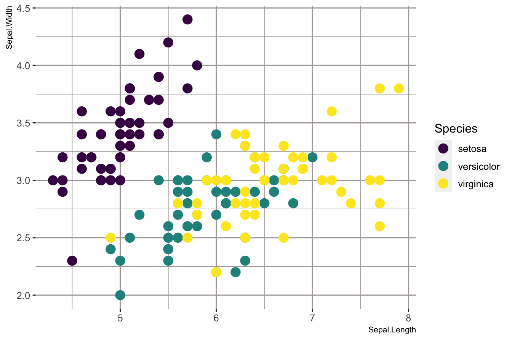

1.5 ggplot2 data visualization
This part will give you an understanding of data visualization using ggplot2. R does have many packages/methods to make graphs, but ggplot2 is one of the most versatile one. It implements grammar of graphics, a powerful tool to describe and build the components of graphs concisely. If you are curious and want to get in-depth understanding of grammar of graphics in ggplot2 you can read The Layered Grammar of Graphics by Hadley Wickham.
First install tidyverse which includes the ggplot2 package and then add to the current workspace.
A package needed to be installed once, but it needs to be (re)loaded in evry new session.
1.5.1 mpg dataset
mpg is a dataset in tidyverse, which contains observations collected by US Environment Protection Agency on 38 models of cars.
## # A tibble: 234 × 11
## manufacturer model displ year cyl trans drv cty hwy fl class
## <chr> <chr> <dbl> <int> <int> <chr> <chr> <int> <int> <chr> <chr>
## 1 audi a4 1.8 1999 4 auto… f 18 29 p comp…
## 2 audi a4 1.8 1999 4 manu… f 21 29 p comp…
## 3 audi a4 2 2008 4 manu… f 20 31 p comp…
## 4 audi a4 2 2008 4 auto… f 21 30 p comp…
## 5 audi a4 2.8 1999 6 auto… f 16 26 p comp…
## 6 audi a4 2.8 1999 6 manu… f 18 26 p comp…
## 7 audi a4 3.1 2008 6 auto… f 18 27 p comp…
## 8 audi a4 quattro 1.8 1999 4 manu… 4 18 26 p comp…
## 9 audi a4 quattro 1.8 1999 4 auto… 4 16 25 p comp…
## 10 audi a4 quattro 2 2008 4 manu… 4 20 28 p comp…
## # … with 224 more rows1.5.2 Our first ggplot
For plotting the relationship between displ and hwy variable in mpg dataset, run this code (It puts the variables in x and y axis respectively):

The plots shows negative relationship between Engine Size(displ) and Fuel Efficiency(hwy).
Begins with a function ggplot()-creates a coordinate system that you can add addlayers to. The first arugment is the data set to use ggplot(data = mpg) creates an empty graph. Add layers to ggplot()- the function geom_point() adds a layer of points to your plot. Each geom function takes a mapping argument. The mapping argument is always paired with aes()
1.5.3 Template for graphing in ggplot2
We will learn in the later subsections how to complete and extend this basic template to make different types of graphs.

To add colour for distinct values of class variable, we can add an colour = class by mapping it to an aesthetic.
ggplot(data = mpg) +
geom_point(mapping = aes(x = displ, y = hwy, colour = class)) +
scale_colour_viridis_d(option = "plasma") +
facet_wrap(~class, nrow = 2)
facet_wrap splits plot by a single variable into subplots that each display one subset of the data.
ggplot(data = mpg) +
geom_point(mapping = aes(x = displ, y = hwy, colour = class)) +
scale_colour_viridis_d(option = "plasma") +
facet_grid(drv~cyl)
facet_grid splits plot by a combination of two variables into subplots that each display one subset of the data.